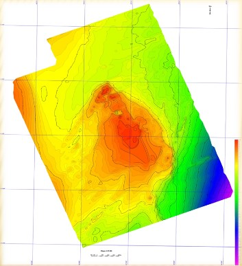
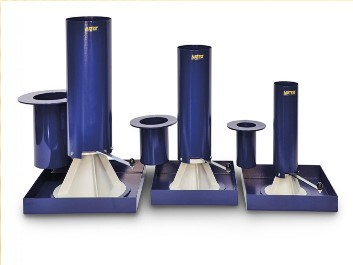
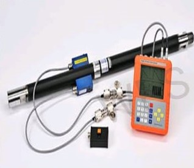
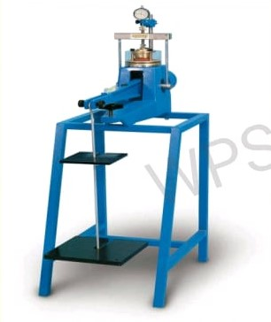
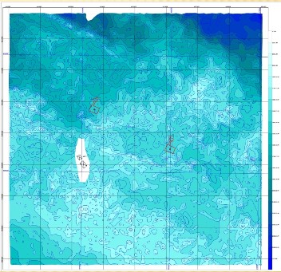

GESCIENCE MMC
Geoscience (Həmçinin Yer Kürəsinin Elmi Adlanır) Yer Kürəsinin Öyrənilməsidir.

GEODEZİK İŞLƏR
Yer səthində fiziki dəqiq alətlərdən...

Uzaqdan İdarə Olunan Video Yazılış
Sualtı video çəkiliş İtaliyanın "AGEOTEC"...

Səhra Sıxlığı Testi (FDT)
Torpağın yerində sıxılmasını...

Dinamik Aydınlama Testi
Süxurların sıxlığı və davamlılığı...

Torpaqların Laboratoriya Tədqiqatları
Torpaqların laboratoriya tədqiqatları...

Su Sahələrində Geodezik Tədqiqat Keçirilir
Batimetriya işləri; Döşəmə...